Interpolate and fill SeaWIFS data#
Adapted from: https://github.com/adcroft/interp_and_fill/blob/master/Interpolate and fill SeaWIFS.ipynb
import numpy
import netCDF4
import scipy.sparse
import scipy.sparse.linalg
import matplotlib.pyplot as plt
import datetime
import xarray as xr
import warnings
warnings.filterwarnings("ignore")
%matplotlib inline
today = datetime.date.today().strftime("%y%m%d")
print(today)
260305
Read MOM6 grid and mask#
fname = '../mesh/tx2_3v3_grid.nc'
grd = xr.open_dataset(fname)
#grd = MOM6grid('../supergrid/ORCA_gridgen/ocean_hgrid_250930.nc')
ocn_qlon = grd.qlon
ocn_qlat = grd.qlat
ocn_mask = grd.tmask
ocn_nj, ocn_ni = ocn_mask.shape
plt.pcolormesh(ocn_qlon, ocn_qlat, ocn_mask); plt.colorbar();
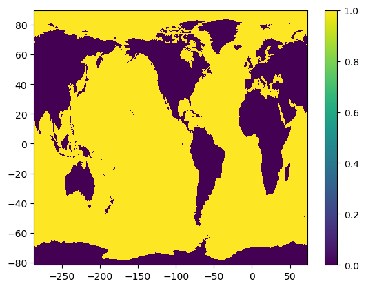
Read SeaWIFS data#
src_nc = netCDF4.Dataset('/glade/campaign/cgd/oce/datasets/obs/seawifs/SeaWIFS.L3m_MC_CHL_chlor_a_0.25deg.nc')
src_data = src_nc.variables['chlor_a']
src_nj, src_ni = src_data.shape[-2], src_data.shape[-1]
print('src shape = %i x %i'%(src_nj,src_ni))
src_lon = src_nc.variables[src_data.dimensions[-1]]
src_lat = src_nc.variables[src_data.dimensions[-2]]
src_lat = ((numpy.arange(src_nj)+0.5)/src_nj - 0.5)*180. # Recompute as doubles
src_x0 = int( ( src_lon[0] + src_lon[-1] )/2 + 0.5) - 180.
src_lon = ((numpy.arange(src_ni)+0.5)/src_ni)*360.+src_x0 # Recompute as doubles
src_qlat = ((numpy.arange(src_nj+1))/src_nj - 0.5)*180. # For plotting
src_qlon = ((numpy.arange(src_ni+1))/src_ni)*360.+src_x0 # For plotting
src shape = 720 x 1440
plt.pcolormesh(numpy.ma.log10(src_data[0,::-1,:])); plt.colorbar();
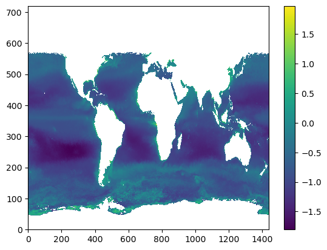
def super_sample_grid(ocn_qlat, ocn_qlon, ocn_mask, src_nj, src_ni):
nj, ni = ocn_mask.shape
fac = 1
while fac*nj<src_nj and fac*ni<src_ni:
fac += 1
lon = numpy.zeros( (nj,fac,ni,fac) )
lat = numpy.zeros( (nj,fac,ni,fac) )
mask = numpy.zeros( (nj,fac,ni,fac) )
for j in range(fac):
ya = ( 2*j+1 ) / ( 2*fac )
yb = 1. - ya
for i in range(fac):
xa = ( 2*i+1 ) / ( 2*fac )
xb = 1. - xa
lon[:,j,:,i] = ( yb * ( xb * ocn_qlon[:-1,:-1] + xa * ocn_qlon[:-1,1:] )
+ ya * ( xb * ocn_qlon[1:,:-1] + xa * ocn_qlon[1:,1:] ) )
lat[:,j,:,i] = ( yb * ( xb * ocn_qlat[:-1,:-1] + xa * ocn_qlat[:-1,1:] )
+ ya * ( xb * ocn_qlat[1:,:-1] + xa * ocn_qlat[1:,1:] ) )
return lat, lon
spr_lat, spr_lon = super_sample_grid(ocn_qlat, ocn_qlon, ocn_mask, src_nj, src_ni)
def latlon2ji(src_lat, src_lon, lat, lon):
nj, ni = len(src_lat), len(src_lon)
src_x0 = int( ( src_lon[0] + src_lon[-1] )/2 + 0.5) - 180.
j = numpy.maximum(0, numpy.floor( ( ( lat + 90. ) / 180. ) * nj - 0.5 ).astype(int))
i = numpy.mod( numpy.floor( ( ( lon - src_x0 ) / 360. ) * ni - 0.5 ), ni ).astype(int)
jp1 = numpy.minimum(nj-1, j+1)
ip1 = numpy.mod(i+1, ni)
return j,i,jp1,ip1
y, x = src_lat[0], src_lon[0]
latlon2ji(src_lat, src_lon, y, x)
(np.int64(0), np.int64(0), np.int64(1), np.int64(1))
def super_interp(src_lat, src_lon, data, spr_lat, spr_lon):
nj, ni = data.shape
dy, dx = 180./nj, 360./ni
j0, i0, j1, i1 = latlon2ji(src_lat, src_lon, spr_lat, spr_lon)
def ydist(lat0, lat1):
return numpy.abs( lat1-lat0 )
def xdist(lon0, lon1):
return numpy.abs( numpy.mod((lon1-lon0)+180, 360) - 180 )
w_e = xdist( src_lon[i0], spr_lon) / dx
w_w = 1. - w_e
w_n = ydist( src_lat[j0], spr_lat) / dy
w_s = 1. - w_n
return ( w_s*w_w * data[j0,i0] + w_n*w_e * data[j1,i1] ) + ( w_n*w_w * data[j1,i0] + w_s*w_e * data[j0,i1] )
def fill_missing_data(idata, mask, verbose=True, maxiter=0, debug=False, stabilizer=1.e-14):
"""
Returns data with masked values objectively interpolated except where mask==0.
Arguments:
data - numpy.ma.array with mask==True where there is missing data or land.
mask - numpy.array of 0 or 1, 0 for land, 1 for ocean.
Returns a numpy.ma.array.
"""
nj,ni = idata.shape
fdata = idata.filled(0.) # Working with an ndarray is faster than working with a masked array
if debug:
plt.figure(); plt.pcolormesh(mask); plt.title('mask'); plt.colorbar();
#plt.figure(); plt.pcolormesh(idata.mask); plt.title('idata.mask'); plt.colorbar();
plt.figure(); plt.pcolormesh(idata); plt.title('idata'); plt.colorbar();
plt.figure(); plt.pcolormesh(idata.filled(3.)); plt.title('idata.filled'); plt.colorbar();
plt.figure(); plt.pcolormesh(idata.filled(3.)); plt.title('fdata'); plt.colorbar();
missing_j, missing_i = numpy.where( idata.mask & (mask>0) )
n_missing = missing_i.size
if verbose:
print('Data shape: %i x %i = %i with %i missing values'%(nj, ni, nj*ni, numpy.count_nonzero(idata.mask)))
print('Mask shape: %i x %i = %i with %i land cells'%(mask.shape[0], mask.shape[1],
numpy.prod(mask.shape), numpy.count_nonzero(1-mask)))
print('Data has %i missing values in ocean'%(n_missing))
print('Data range: %g .. %g '%(idata.min(),idata.max()))
# ind contains column of matrix/row of vector corresponding to point [j,i]
ind = numpy.zeros( fdata.shape, dtype=int ) - int(1e6)
ind[missing_j,missing_i] = numpy.arange( n_missing )
if verbose: print('Building matrix')
A = scipy.sparse.lil_matrix( (n_missing, n_missing) )
b = numpy.zeros( (n_missing) )
ld = numpy.zeros( (n_missing) )
A[range(n_missing),range(n_missing)] = 0.
if verbose: print('Looping over cells')
for n in range(n_missing):
j,i = missing_j[n],missing_i[n]
im1 = ( i + ni - 1 ) % ni
ip1 = ( i + 1 ) % ni
jm1 = max( j-1, 0)
jp1 = min( j+1, nj-1)
if j>0 and mask[jm1,i]>0:
ld[n] -= 1.
ij = ind[jm1,i]
if ij>=0:
A[n,ij] = 1.
else:
b[n] -= fdata[jm1,i]
if mask[j,im1]>0:
ld[n] -= 1.
ij = ind[j,im1]
if ij>=0:
A[n,ij] = 1.
else:
b[n] -= fdata[j,im1]
if mask[j,ip1]>0:
ld[n] -= 1.
ij = ind[j,ip1]
if ij>=0:
A[n,ij] = 1.
else:
b[n] -= fdata[j,ip1]
if j<nj-1 and mask[jp1,i]>0:
ld[n] -= 1.
ij = ind[jp1,i]
if ij>=0:
A[n,ij] = 1.
else:
b[n] -= fdata[jp1,i]
if j==nj-1 and mask[j,ni-1-i]>0: # Tri-polar fold
ld[n] -= 1.
ij = ind[j,ni-1-i]
if ij>=0:
A[n,ij] = 1.
else:
b[n] -= fdata[j,ni-1-i]
if debug:
tmp = numpy.zeros((nj,ni)); tmp[ missing_j, missing_i ] = b
plt.figure(); plt.pcolormesh(tmp); plt.title('b (initial)'); plt.colorbar();
# Set leading diagonal
b[ld>=0] = 0.
A[range(n_missing),range(n_missing)] = ld - stabilizer
if debug:
tmp = numpy.zeros((nj,ni)); tmp[ missing_j, missing_i ] = b
plt.figure(); plt.pcolormesh(tmp); plt.title('b (final)'); plt.colorbar();
tmp = numpy.ones((nj,ni)); tmp[ missing_j, missing_i ] = A.diagonal()
plt.figure(); plt.pcolormesh(tmp); plt.title('A[i,i]'); plt.colorbar();
if verbose: print('Matrix constructed')
A = scipy.sparse.csr_matrix(A)
if verbose: print('Matrix converted')
new_data = numpy.ma.array( fdata, mask=(mask==0))
if maxiter is None:
x,info = scipy.sparse.linalg.bicg(A, b)
elif maxiter==0:
x = scipy.sparse.linalg.spsolve(A, b)
else:
x,info = scipy.sparse.linalg.bicg(A, b, maxiter=maxiter)
if verbose: print('Matrix inverted')
new_data[missing_j,missing_i] = x
return new_data
Read Chla dataset for tx2_3#
!ncgen -o seawifs-clim-1997-2010-tx2_3.nc seawifs-clim-1997-2010-tx2_3.cdl
chla_tx2_3 = netCDF4.Dataset('seawifs-clim-1997-2010-tx2_3.nc', 'r+')
chlor_a = chla_tx2_3.variables['CHL_A'][:]
Main loop#
for t in range(src_data.shape[0]):
#for t in range(1):
q_int = super_interp(src_lat, src_lon, src_data[t,::-1,:], spr_lat, spr_lon)
q_int = q_int.swapaxes(1,2).reshape((ocn_nj,ocn_ni,q_int.shape[3]*q_int.shape[-1])).mean(axis=-1)
q = q_int * ocn_mask
chlor_a[t,:] = fill_missing_data(q, ocn_mask)
Data shape: 480 x 540 = 259200 with 126867 missing values
Mask shape: 480 x 540 = 259200 with 106881 land cells
Data has 20980 missing values in ocean
Data range: 0 .. 48.7087
Building matrix
Looping over cells
Matrix constructed
Matrix converted
Matrix inverted
Data shape: 480 x 540 = 259200 with 121898 missing values
Mask shape: 480 x 540 = 259200 with 106881 land cells
Data has 16116 missing values in ocean
Data range: 0 .. 19.2381
Building matrix
Looping over cells
Matrix constructed
Matrix converted
Matrix inverted
Data shape: 480 x 540 = 259200 with 121583 missing values
Mask shape: 480 x 540 = 259200 with 106881 land cells
Data has 15833 missing values in ocean
Data range: 0 .. 19.4221
Building matrix
Looping over cells
Matrix constructed
Matrix converted
Matrix inverted
Data shape: 480 x 540 = 259200 with 132852 missing values
Mask shape: 480 x 540 = 259200 with 106881 land cells
Data has 27091 missing values in ocean
Data range: 0 .. 21.8352
Building matrix
Looping over cells
Matrix constructed
Matrix converted
Matrix inverted
Data shape: 480 x 540 = 259200 with 147269 missing values
Mask shape: 480 x 540 = 259200 with 106881 land cells
Data has 41572 missing values in ocean
Data range: 0 .. 52.1276
Building matrix
Looping over cells
Matrix constructed
Matrix converted
Matrix inverted
Data shape: 480 x 540 = 259200 with 153274 missing values
Mask shape: 480 x 540 = 259200 with 106881 land cells
Data has 47704 missing values in ocean
Data range: 0 .. 29.5784
Building matrix
Looping over cells
Matrix constructed
Matrix converted
Matrix inverted
Data shape: 480 x 540 = 259200 with 147390 missing values
Mask shape: 480 x 540 = 259200 with 106881 land cells
Data has 42059 missing values in ocean
Data range: 0 .. 33.3406
Building matrix
Looping over cells
Matrix constructed
Matrix converted
Matrix inverted
Data shape: 480 x 540 = 259200 with 133915 missing values
Mask shape: 480 x 540 = 259200 with 106881 land cells
Data has 28729 missing values in ocean
Data range: 0 .. 27.4176
Building matrix
Looping over cells
Matrix constructed
Matrix converted
Matrix inverted
Data shape: 480 x 540 = 259200 with 130829 missing values
Mask shape: 480 x 540 = 259200 with 106881 land cells
Data has 25543 missing values in ocean
Data range: 0 .. 53.7029
Building matrix
Looping over cells
Matrix constructed
Matrix converted
Matrix inverted
Data shape: 480 x 540 = 259200 with 135907 missing values
Mask shape: 480 x 540 = 259200 with 106881 land cells
Data has 30198 missing values in ocean
Data range: 0 .. 37.5241
Building matrix
Looping over cells
Matrix constructed
Matrix converted
Matrix inverted
Data shape: 480 x 540 = 259200 with 136718 missing values
Mask shape: 480 x 540 = 259200 with 106881 land cells
Data has 30841 missing values in ocean
Data range: 0 .. 36.036
Building matrix
Looping over cells
Matrix constructed
Matrix converted
Matrix inverted
Data shape: 480 x 540 = 259200 with 132198 missing values
Mask shape: 480 x 540 = 259200 with 106881 land cells
Data has 26266 missing values in ocean
Data range: 0 .. 21.2171
Building matrix
Looping over cells
Matrix constructed
Matrix converted
Matrix inverted
Compare result against original data#
for t in range(src_data.shape[0]):
fig, ax = plt.subplots(nrows=1, ncols=2, figsize=(18,5.))
plt.suptitle('Month # {}'.format(t+1))
ax[0].pcolormesh(grd.qlon, grd.qlat,numpy.ma.log10(chlor_a[t,:]),vmin=-2,vmax=2)
ax[0].set_title('chlor_a remapped to tx1_4v1')
ax[1].pcolormesh(numpy.ma.log10(src_data[t,::-1,:]),vmin=-2,vmax=2)
ax[1].set_title('original data')
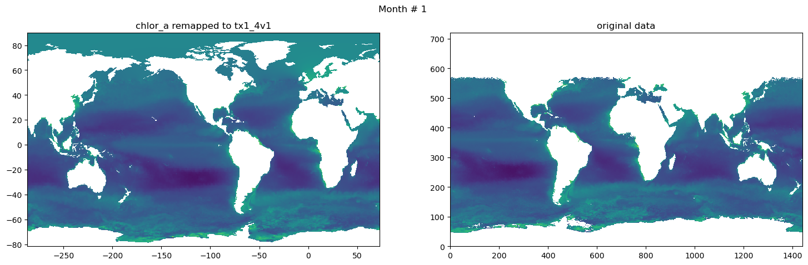
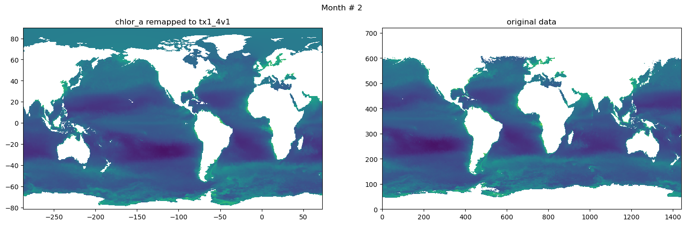
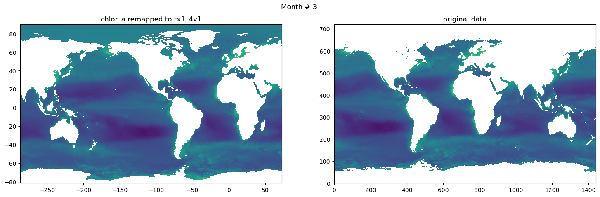
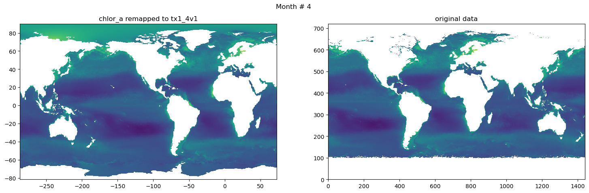
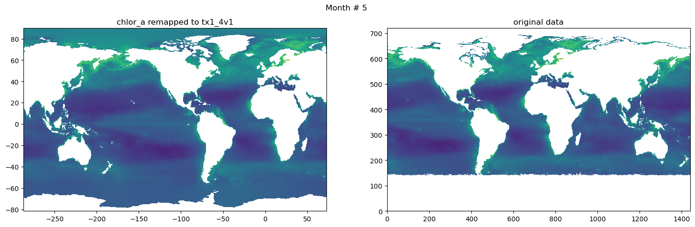
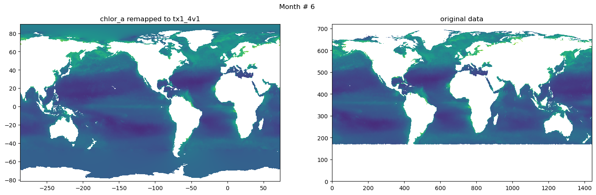
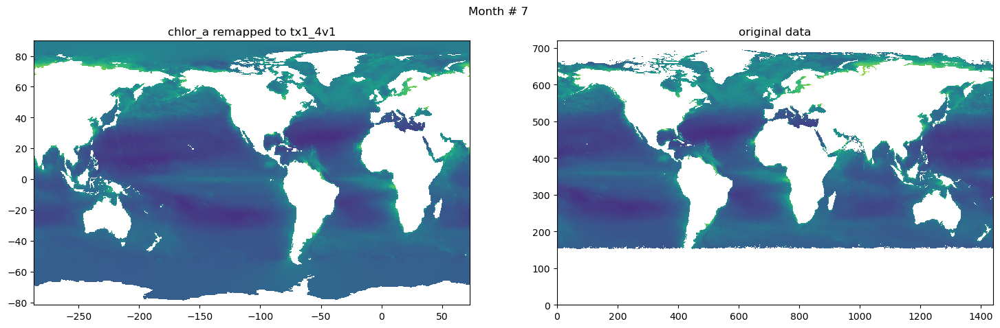
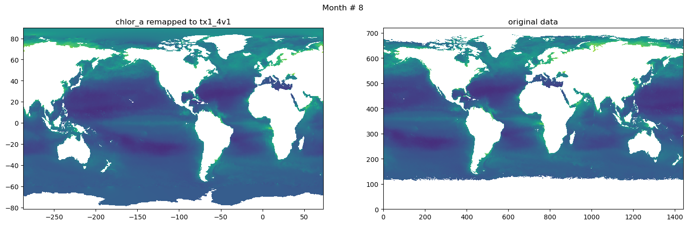
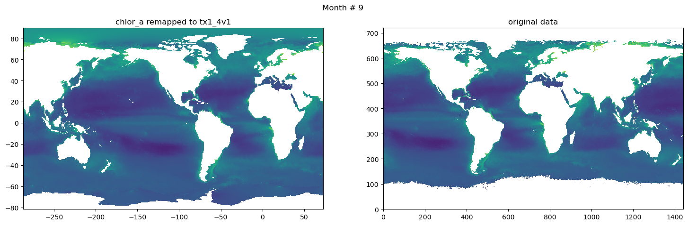
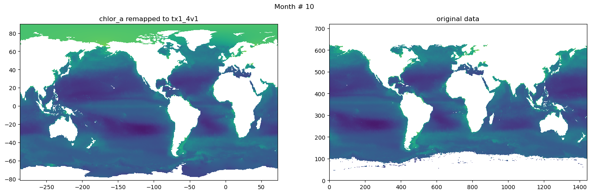
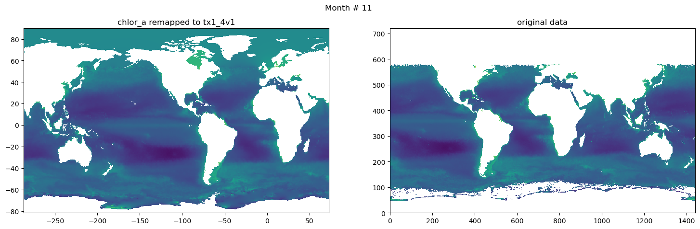
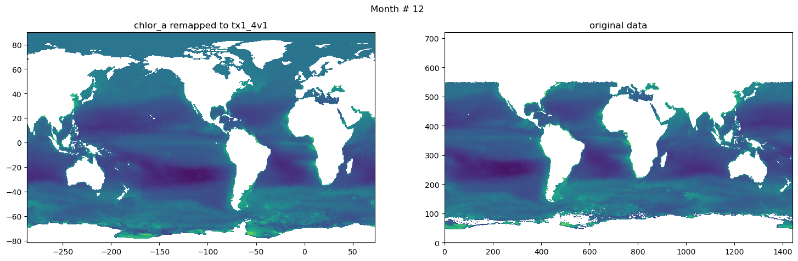
Save data#
# Global attrs
chla_tx2_3.title = 'Chlorophyll Concentration, OCI Algorithm, interpolated and objectivelly filled to tx2_3v2'
chla_tx2_3.repository = 'https://github.com/NCAR/tx2_3/chlorophyll/'
chla_tx2_3.authors = 'Gustavo Marques (gmarques@ucar.edu) and Frank Bryan (bryan@ucar.edu )'
chla_tx2_3.date = today
jm, im = numpy.shape(grd.tlon)
chla_tx2_3.variables['CHL_A'][:,:,:] = chlor_a[:,:,:]
chla_tx2_3.variables['LON'][:] = grd.tlon[int(jm/2),:]
chla_tx2_3.variables['LAT'][:] = grd.tlat[:,int(im/2)]
chla_tx2_3.sync()
chla_tx2_3.close()
ds = xr.open_dataset('seawifs-clim-1997-2010-tx2_3.nc')
fname = 'seawifs-clim-1997-2010-tx2_3v3_{}.nc'.format(today)
ds.to_netcdf(fname,
engine="netcdf4",
format="NETCDF3_64BIT_DATA")